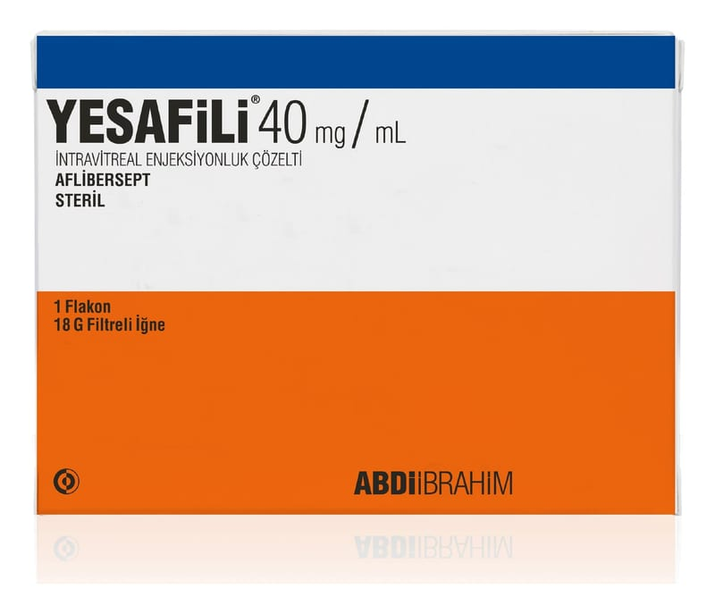

Yesafili 40 mg/mL İntravitreal Enjeksiyonluk Çözelti

Ne için kullanılır
KT · Bölüm 1• YESAFILI, göz içine enjeksiyon için çözelti içeren bir adet tip I cam flakon ve flakon içeriğinin çekilmesi için bir adet filtreli iğne (18G) içeren ambalajlarda kullanıma sunulmaktadır. • Her flakon, yaklaşık en az 4 mg aflibersepte eşdeğer 0,1 mL’lik ekstrakte edilebilir hacim içerir. Bu, 2 mg aflibersept içeren 0,05 mL’lik tek bir dozun sağlanabilmesi için yeterli miktar ihtiva eder. • YESAFILI, steril, berrak, renksiz ila soluk sarı arası renkte, göz içine enjeksiyon yoluyla uygulamaya yönelik izo-ozmotik (gözünüzün içi ile benzer özelliklere sahip) sulu çözeltidir. • YESAFILI biyobenzer bir ilaçtır. • YESAFILI’nin etkin maddesi olan aflibersept, antineovaskülarizasyon (yeni damar oluşumunu engelleyen) ilaçlar olarak adlandırılan bir ilaç grubuna aittir. Aflibersept gözün ağ tabakasında (retina; göz ün ışığa duyarlı olan arka kısmı) bulunan vasküler endotelyal büyüme faktör ü-A (VEGF-A) ve plasental büyüme faktörü (P1GF) olarak bilinen bir grup proteinin aktivitesini engeller. • Yaşa bağlı makula bozulması (ya ş tip YBMD’si) ve uzak görme bozukluğu ile birlikte görülen yeni damar oluşumu (miyopik koroidal neovaskülarizasyonu, miyopik KNV’si) olan hastalarda aşırı miktarlarda bulunan bu faktörler gözde normal olmayan, yeni kan damarlarının oluşumuna
neden olurlar. Bu yeni kan damarları, kan bileşenlerinin göze sızmasına ve bunun neticesinde gözde bulunan, görme işlevinden sorumlu dokularda hasara neden olabilirler. Retinal ven dal oklüzyonu (RVDO) hastalarında; retinadan kanı uzağa taşıyan ana kan damarlarının bir ya da daha fazla dalında tıkanma meydana gelir. Bu duruma cevaben VEGF düzeyleri yükselerek retinaya sıvı sızmasına ve buna bağlı maküler ödeme neden olurlar. Santral retinal ven oklüzyonu (SRV O) olan hastalarda, kanı retinadan uzaklaştıran ana kan damarında tıkanma meydana gelir. Bu duruma cevaben VEGF düzeyleri yükselerek retinaya sıvı sızmasına ve buna bağlı olarak da makulada (sarı nokta) şişmeye neden olurlar; buna maküler ödem (gözün arka tarafında şişme) adı verilir. Makula sıvı ile şiş ince, merkezi görme bulanık hale gelir. Diyabetik makul a ödemi (DMÖ), makula içindeki kan damarlarından sıvı sızıntısı nedeniyle diyabet hastalarında meydana gelen retina şişmesidir. Makula, retinanın iyi görmeden sorumlu kısmıdır. Makula sıvıyla şiştiğinde, merkezi görme bulanıklaşır. Aflibersept gözde normal olmayan yeni kan damarlarının oluş umunu ve retinaya sızan sıvı ve kan miktarını azalttığı gösterilmiştir. Aflibersept, yaş tip YBMD, SRV O, RVDO, DMÖ ve miyopik KNV ile ilişkili görüş kaybının ilerlememesine yardımcı olur ve birçok hastada görüş kaybında düzelme sağlar. • YESAFILI, aşağıdaki göz rahatsızlıklarının tedavisi için göz içine enjeksiyon yoluyla uygulanır: - Neovasküler (yaş tip) ya şa bağlı makula bozulması (YBMD), - Retinal damar tıkanıklığına ( RVDO ya da SRVO) sekonder gelişen maküler ödem; - Diyabetik makula ödeminden (DMO) kaynaklanan görme bozukluğu, - Miyopik koroidal neovaskülarizasyona (miyopik KNV) bağlı görme bozukluğu.